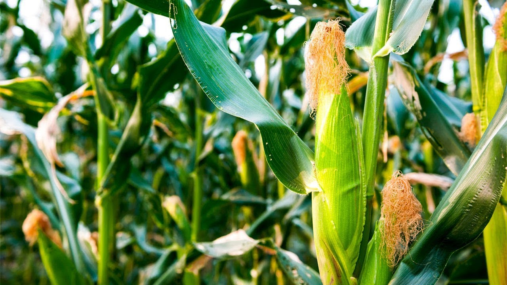

Corn is ready for harvest about 3 weeks after the tassel grows on top of the corn plant. Corn is ripe when juice from the kernels is milky white, the silk on the ears has turned dark brown, the kernels get large, chewy and pasty like dough. The best time to pick corn is in the early morning or evening when it is cool. To harvest the ears, hold the stalk below the ear and twist the tip of the ear toward the ground until it breaks off. Cook the corn right away, or store it in the refrigerator until mealtime. Corn loses flavor and nutrients quickly when left at high temperature. Watch the corn closely because the quality changes fast.
